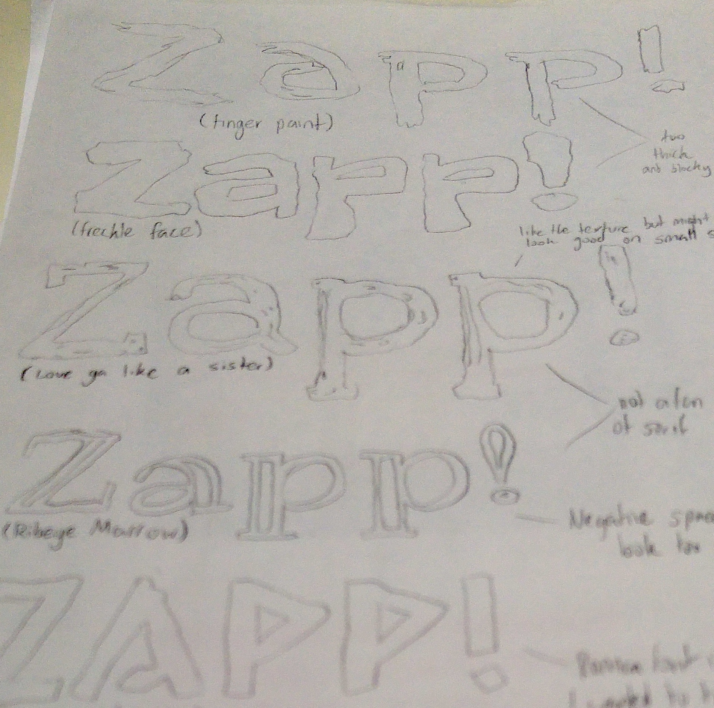

Product Design-
Micropublications
ZAPP!
The Indie Zine Printer
As part of a three day workshop, I developed my own Micropublication, from idea generation to final concept. I settled on the idea of creating an app that connects to a printer that allows you to both print and bind comics and zines on demand.
This idea would support independant creators by cutting down the costs they would have to pay for production while still allowing consumers to have direct access to a finished product. It also has the added bonus of being a physical book as opposed to a digital one, reducing eye strain- something which I suffer from frequently when trying to read books and comics from screens.
Click on image for full-size version
{kind=link}
I found the time constraints posed by this masterclass both challenging and rewarding. Coming up with concepts for micropublications, narrowing them down to develop one, doing research and creating branding and wireframes to go with that, I feel that I produced a solid concept product, complete with branding that could very easily be produced in the near future.
Sketches
I started off this project the way I start most of my projects- by using pencil and paper to create rough concepts and ideas that I will develop to shape the visual language of my work.
In this instance, I tried different fonts to see what look I wanted the brand for my micropublication to have. As you can see from the final result, I settled on something that reflected the hand-drawn nature of most zines and comics.
My initial sketches explored wire frames and illustrations detailing what I wanted the app and the printer to look like and how they would function together.
 \
\


Back to top